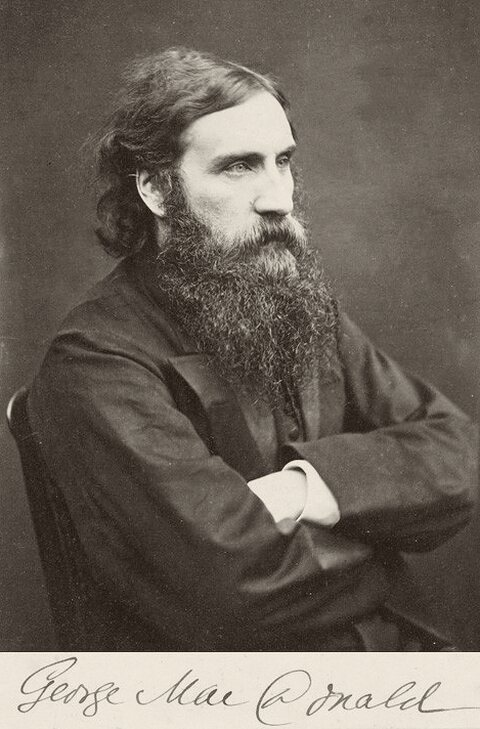

His Life

George MacDonald was born on 10 December 1824 at Huntly, in Aberdeenshire, the son of a farmer and mill-owner. His mother died in 1832, when he was still a small boy. He grew up among the fields and hills, the strict Calvinist preaching and the warm family life that fill his Scottish novels, and studied at King’s College, Aberdeen, graduating in 1845.
The minister
After some years as a tutor in London he trained for the Congregational ministry at Highbury College, and in 1850 became minister of Trinity Congregational Church at Arundel, in Sussex. In 1851 he married Louisa Powell; they had eleven children. At Arundel his preaching soon troubled some of the deacons: he had suggested that those who never heard the gospel in this life might have a further opportunity after death, and he was suspected of being influenced by German theology. His salary was cut, and in 1853 he resigned. He never again held a regular pastorate, though he preached and lectured all his life, and in later years worshipped in the Church of England, drawn there in part by F. D. Maurice, whose friend he became.
The writer
Ill health and poverty followed the family for years. MacDonald turned to writing: a dramatic poem, Within and Without (1855), and then Phantastes (1858), a strikingly original “faerie romance” that helped to shape modern fantasy. His first novel, David Elginbrod (1863), brought him a wider readership, and for the next thirty-five years novels came almost yearly, many of them set in the Aberdeenshire of his boyhood: Alec Forbes of Howglen, Robert Falconer, Malcolm, Sir Gibbie. Alongside them came the children’s books that are now his best known, At the Back of the North Wind, The Princess and the Goblin and The Princess and Curdie; volumes of poems, among them A Book of Strife in the Form of the Diary of an Old Soul; and three series of Unspoken Sermons.
In 1859 he became professor of English literature at Bedford College, London, one of the first colleges to offer higher education to women, and teaching and lecturing remained a large part of his livelihood. His circle took in John Ruskin, Lady Byron, Octavia Hill and Charles Dodgson, whose manuscript of Alice’s Adventures the MacDonald children heard and loved before it was published. In 1872 and 1873 he made a long lecture tour of the United States and Canada, where, as Barbara Amell has documented, he gave four lectures in the spring of 1873. In 1877 he was granted a Civil List pension.
Bordighera
From the early 1880s, for the sake of their health, the family spent most of each year at Bordighera, on the Italian Riviera, where their house became a gathering-place for visitors and for the plays the family performed together. Lilith, his last and strangest romance, appeared in 1895. Louisa died in 1902. MacDonald died on 18 September 1905 at Ashtead, in Surrey, and his ashes were buried beside her at Bordighera.
His readers
His fantasies influenced writers from G. K. Chesterton to Madeleine L’Engle. C. S. Lewis, who found Phantastes on a station bookstall as a young man, said it had “baptised” his imagination; he called MacDonald his master, made him his guide in The Great Divorce, and gathered an anthology of his sayings in 1946.
Further reading
- Greville MacDonald, George MacDonald and His Wife (1924).
- C. S. Lewis (ed.), George MacDonald: An Anthology (1946).
- Barbara Amell (ed.), A Perfect Soul: George MacDonald in North America (2009).
His books in this library
- 1858Phantastes
- 1863David Elginbrod
- 1864Adela Cathcart
- 1864A Hidden Life and Other Poems
- 1864The Portent and Other Stories
- 1865Alec Forbes of Howglen
- 1867Annals of a Quiet Neighbourhood
- 1867Cross Purposes and The Shadows
- 1867The Light Princess and Other Fairy Stories
- 1867Unspoken Sermons
- 1868England’s Antiphon
- 1868Guild Court
- 1868Robert Falconer
- 1868The Seaboard Parish
- 1870The Miracles of Our Lord
- 1871At the Back of the North Wind
- 1871Ranald Bannerman’s Boyhood
- 1871The Vicar’s Daughter
- 1871Wilfrid Cumbermede
- 1872The Princess and the Goblin
- 1873Gutta-Percha Willie, the Working Genius
- 1875Malcolm
- 1875A Double Story
- 1876St. George and St. Michael
- 1876Thomas Wingfold, Curate
- 1877The Marquis of Lossie
- 1879Paul Faber, Surgeon
- 1879Sir Gibbie
- 1880A Book of Strife in the Form of the Diary of an Old Soul
- 1881Warlock o’ Glenwarlock
- 1881Mary Marston
- 1882The Princess and Curdie
- 1882Stephen Archer and Other Tales
- 1882Weighed and Wanting
- 1883Donal Grant
- 1885The Tragedie of Hamlet
- 1886What’s Mine’s Mine
- 1887Home Again
- 1888The Elect Lady
- 1891The Flight of the Shadow
- 1891A Rough Shaking
- 1891There and Back
- 1892The Hope of the Gospel
- 1893A Dish of Orts
- 1893Heather and Snow
- 1893The Poetical Works of George MacDonald, Volume I
- 1893The Poetical Works of George MacDonald, Volume II
- 1895Lilith
- 1897Rampolli
- 1897Salted with Fire
- 1898Far Above Rubies